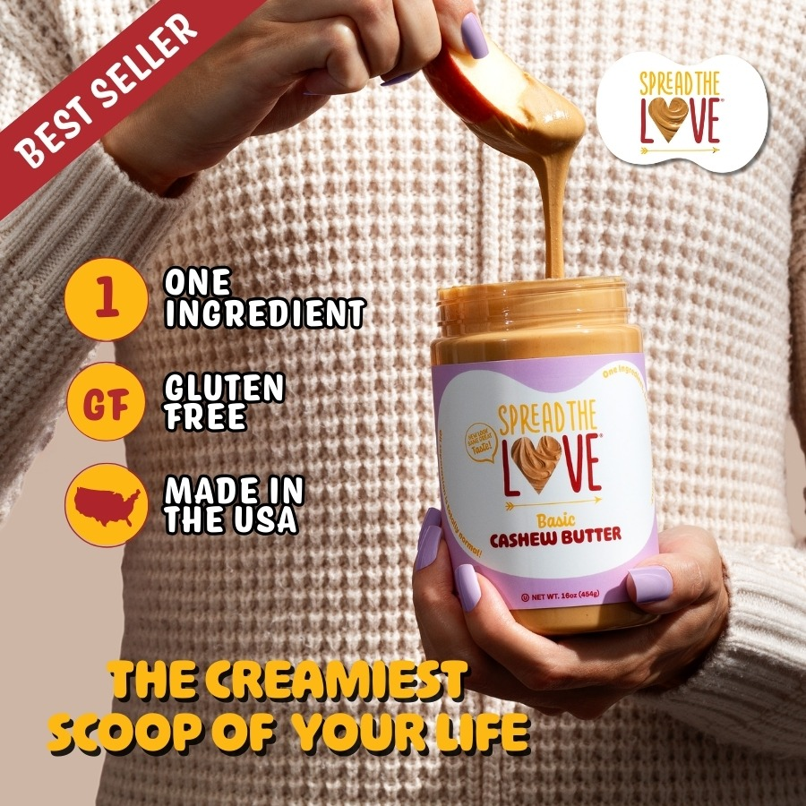
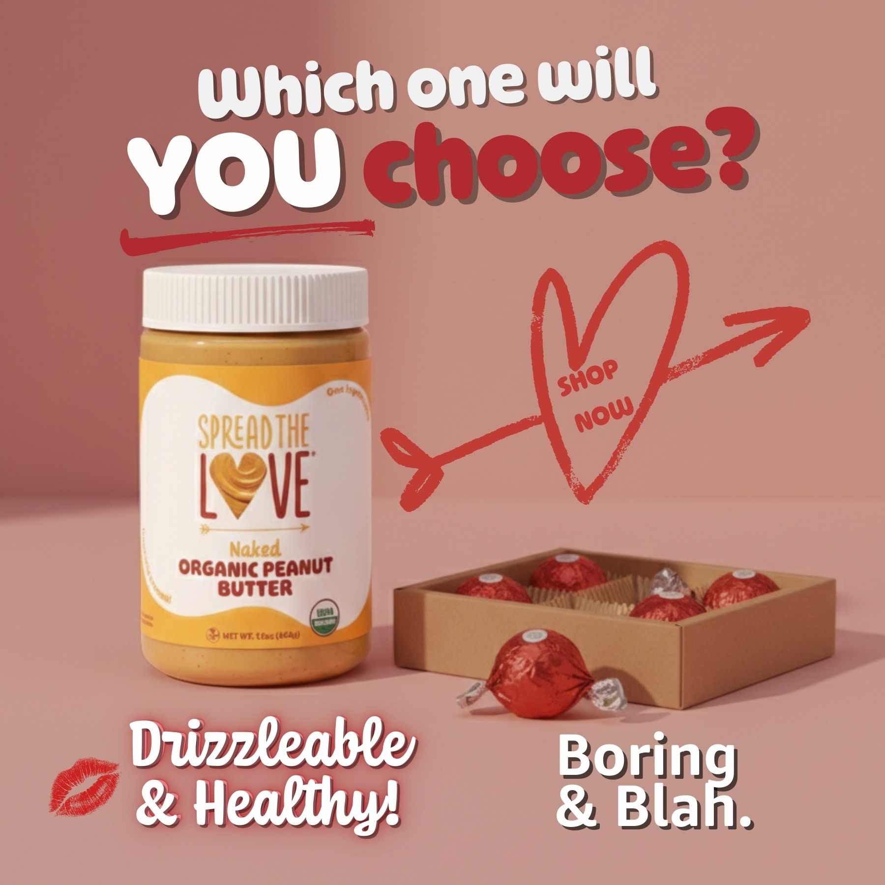
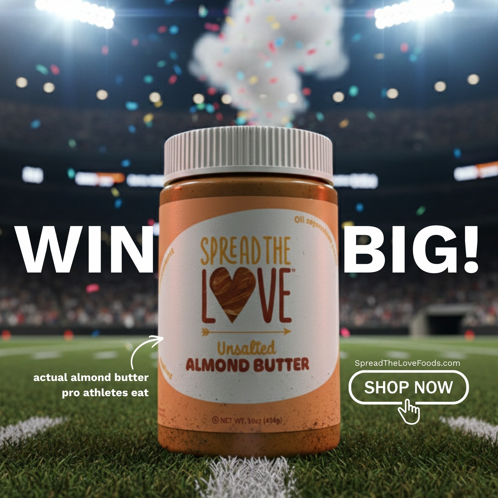

E-COMMERCE · PAID MEDIA · CREATIVE
Spread The Love Foods
Full-cycle digital marketing work for a consumer food brand, combining paid advertising, creative production, testing, KPI analysis, and campaign operations.
$20K/monthadvertising budget managed
2.5–4xreported ROAS
- Managed Meta Ads and Google Ads campaigns.
- Monitored ROAS, CPC, CTR, conversions, and spend to identify optimization opportunities.
- Produced and optimized image and video creatives for paid-media testing.
- Worked through campaign planning, documentation, optimization, and operational improvements.

